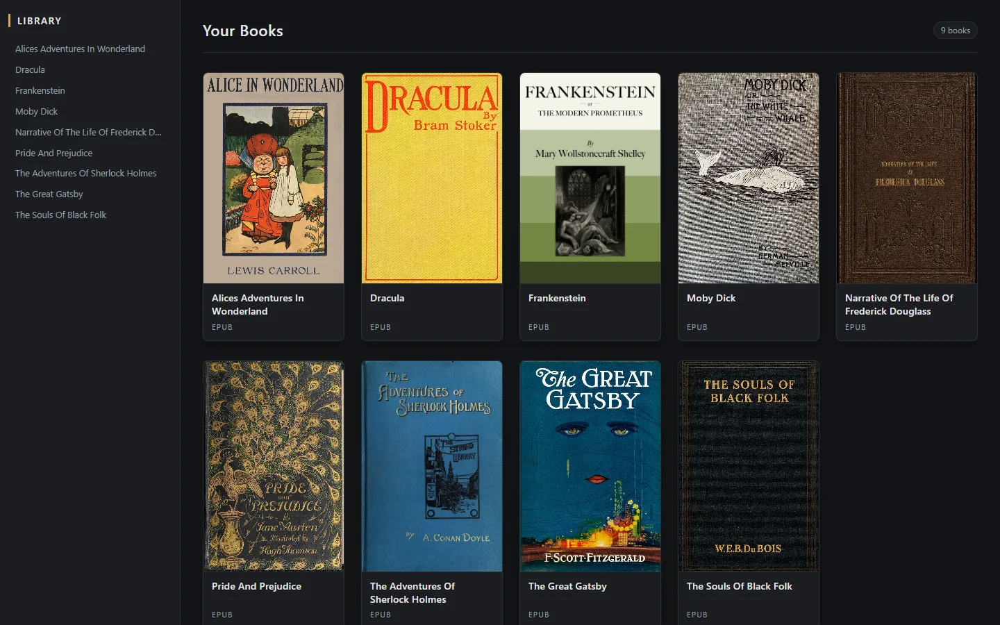
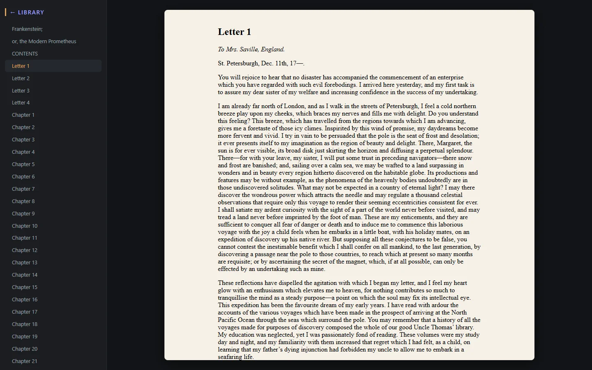
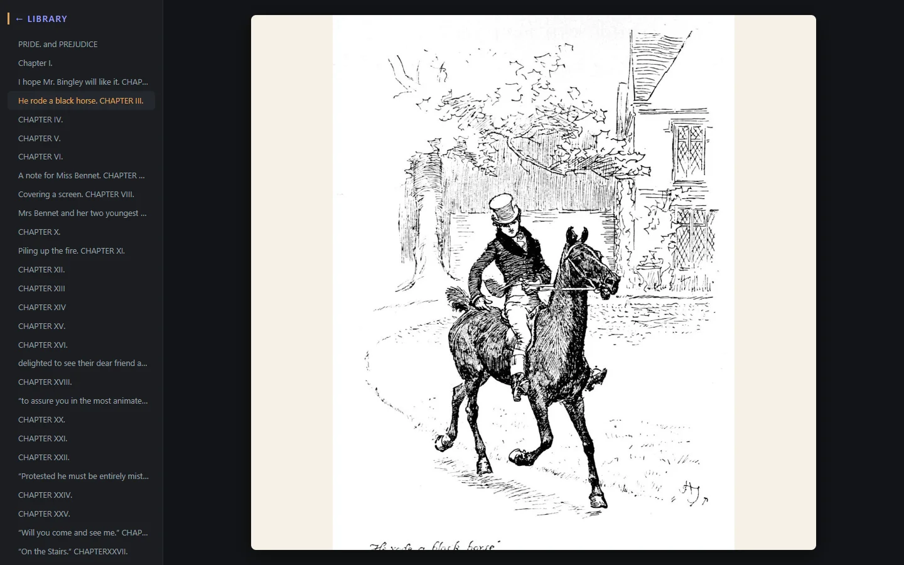
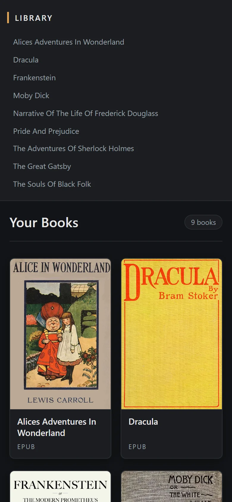

~/overview $ less about.txt
> Desktop feel, web stack
A local Flask server wrapped in its own window by flaskwebgui. It feels like an app, but it's really a web page served from your own machine.
> Nothing unpacked to disk
Books are opened with EbookLib and every chapter, stylesheet and image is served straight from memory.
> Publisher styling intact
Each file keeps the media type the EPUB declares for it, so books render the way the publisher designed them. The EPUB's own files are never modified.
~/usage $ ./walkthrough.sh
-
[1] Find a book
The dashboard shows every book in your library. Click a title in the sidebar to scroll to its card, or scroll through the grid. Titles come from the file names: the
.epubextension is dropped, underscores and hyphens become spaces, and each word is capitalized, soblack_feminist_thought.epubshows up as "Black Feminist Thought". -
[2] Open it and read
Click a cover to open the reader. Choose a chapter in the sidebar and only the page on the right changes, so you keep your place in the table of contents. The current chapter is highlighted.

> Reading Frankenstein. The table of contents stays put while chapters load into the paper page. -
[3] Illustrations come along
Images inside the book load from the EPUB itself and are kept inside the page, so illustrated editions read the way they were printed.

> Hugh Thomson's illustrations in Pride and Prejudice, served straight out of the EPUB. -
[4] Go back
Click the heading at the top of the sidebar to return to the dashboard.


~/internals $ cat how_it_works.md
An EPUB is basically a zip file full of web pages: XHTML chapters, CSS, images and a manifest that lists them all. Rather than unpacking books to disk, the app opens each one in memory and answers the browser's requests from it.
> request flow
Desktop window
flaskwebgui opens Chrome/Edge in app mode
Flask routes
dashboard, covers, reader, book files
EbookLib
parses the .epub and looks up items by href
BOOK_REPO
a folder of .epub files on disk
> Routes
| Route | What it does |
|---|---|
/ |
Lists every file in BOOK_REPO and renders the dashboard. |
/book/cover/<ebook> |
Returns the book's cover image. It checks the EPUB's cover item first, then falls back to the <meta name="cover"> entry in the OPF metadata, and returns 404 if neither exists. |
/book/view/<ebook> |
Loads the book, walks its table of contents and renders the reader. |
/book/<href> |
Serves a single file from inside the open book (a chapter, a stylesheet, an image) with its original media type. |
> Why chapters display correctly
Chapters link to their own assets with relative paths such as Styles/style.css or Images/fig1.jpg. Every chapter is served from under /book/, so the browser resolves those paths against /book/ too.
Those requests come back to one route, which finds the matching item in the EPUB and returns it with the media type the book declares. No rewriting of the publisher's HTML is needed.
# app.py
@app.route("/book/<path:href>")
def book_file(href):
item = book.get_item_with_href(href)
if item is None:
abort(404)
return Response(item.get_content(),
mimetype=item.media_type)> Table of contents
An EPUB's table of contents can be nested to any depth. title_search walks book.toc recursively and flattens it into a list of (href, title, kind) tuples. Sections are marked 1 and regular links 0, and the reader indents links under their sections.
def title_search(toc, titleLst):
for item in toc:
if isinstance(item, Iterable):
title_search(item, titleLst)
elif isinstance(item, epub.Section):
titleLst.append((item.href, item.title, 1))
else:
titleLst.append((item.href, item.title, 0))
return titleLst> The reader page
The reader has two parts: a sidebar with the table of contents, and an <iframe name="page"> that shows the current chapter. Each sidebar link has target="page", so clicking one loads that chapter into the frame without reloading the rest of the page.
When a chapter finishes loading, a short script adds a reader stylesheet to it. That stylesheet caps the line length, adds margins, keeps images inside the frame and centers image-only pages such as the cover, all without touching the EPUB's own files.
> The dashboard
Every book is a cover card in a responsive grid. Cards in a row share the same height and width, and titles always get two lines of space so the labels below them line up.
Cards never get narrower than 180px on desktop (140px on phones). Under 700px wide, the sidebar moves above the grid.


~/setup $ ./install.sh
Requires Python 3.13 and Chrome or Edge (flaskwebgui uses one of them to open the app window).
# install
python -m venv .venv
.venv\Scripts\Activate.ps1
pip install Flask EbookLib flaskwebgui
# tell it where your books are
$env:BOOK_REPO = "C:\path\to\your\books"
# run as a desktop app (port 42057)
cd flaskr
python app.py
# or in a browser tab while editing templates
flask --app app run --debug~/roadmap $ cat TODO
> Known limitations
- The open book lives in a module-level global, so only one book can be open at a time.
- Every cover request re-parses the whole EPUB, which slows down large libraries.
- The dashboard lists every file in the folder, not just
.epubfiles. - Books added while the app is open need a page refresh to appear.
> Next up
- [ ] Replace the global book and cache parsed books and covers
- [ ] Only list
.epubfiles and skip ones that fail to open - [ ] Remember the last chapter read in each book
- [ ] Notes and annotations
- [ ] Remember the book folder between sessions
- [ ] Pick up new books without a manual refresh
Screenshots show a demo library of public-domain books from Project Gutenberg.